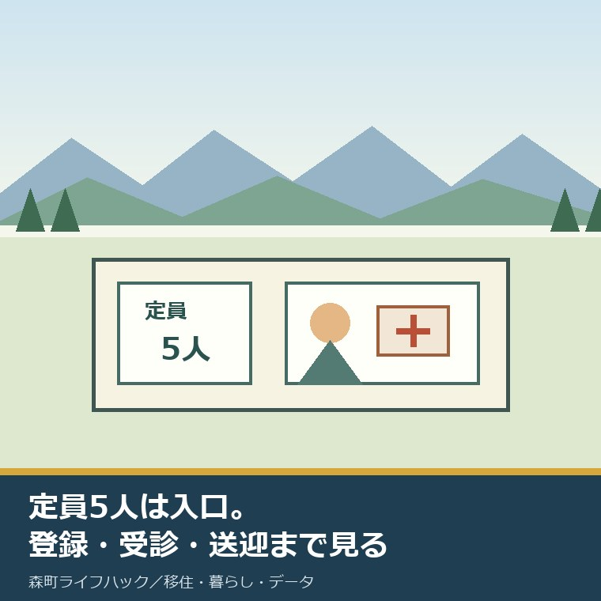
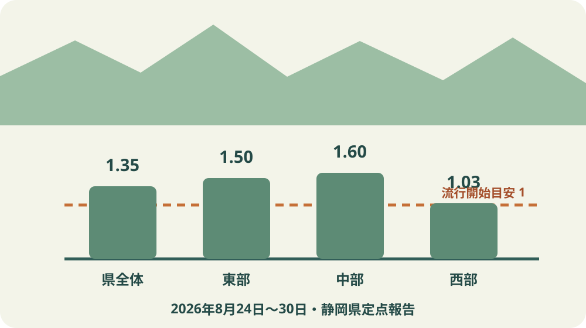
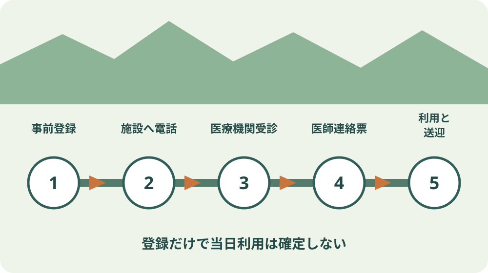

森町の病児保育｜9月に使える定員5人の施設

この記事の要点
Q. 森町で子どもが急病になった日も、病児保育を使えますか。
A. 森町民は、袋井市月見町の「病児・病後児保育室ぬくもり」を広域利用できます。対象は生後6か月から就学前、定員5人、平日8時から17時30分、1回2,000円です。当日利用の保証はなく、電話予約、受診、医師連絡票、施設判断、送迎が要ります。
子育て移住を考えるとき、保育園の定員や支援金は調べても、朝に子どもが発熱した日の動きは後回しになりがちです。
森町には、町民が広域利用できる病児・病後児保育があります。ただし施設は森町内ではなく、袋井市月見町です。
2026年9月4日、静岡県は第35週の定点当たりインフルエンザ患者数が1.35となり、流行期に入ったと公表しました。
9月4日に感染が始まったという意味ではありません。8月24日から30日までの報告を、9月4日更新ページで示したものです。
この記事は2026年9月6日に、静岡県の発生動向、森町の制度案内、子育てサイト、利用手順、登録書、医師連絡票、利用申込書を照合して書いています。
体験ストックには、私や家族がこの施設を利用した記録がありません。預けた、電話した、送迎したとは書きません。
私の意見はこうです。定員5人を「あるから安心」で終わらせない。病気の日に、森町から袋井へ送迎し、受診して医師連絡票を取り、空きを電話で確かめるまでが利用条件です。
森町民が使える施設は袋井市月見町、定員5人
施設の正式名は「病児・病後児保育室ぬくもり」です。
所在地は袋井市月見町6番地の1で、ひだまり保育園に併設されています。
森町が町内に専用室を設けているのではなく、袋井市の事業を森町民が広域利用する仕組みです。
定員は5人です。5家族が必ず同時に使えるという意味ではありません。
原則は先着順ですが、子どもの病状、感染の組合せ、施設側の判断によって順番が変わったり、利用できなかったりします。
2026年9月6日に確認した森町公式ページには、廃止や9月休止の記載はありません。通常開所日の利用対象と読めます。
一方、9月の日別空き状況と臨時休所は公開されていません。利用したい日の朝は施設へ電話します。
施設電話は0538-48-7800、森町の問い合わせ先は健康こども課幼稚園保育園係0538-86-6300です。

9月4日公表は第35週1.35、注意報ではない
静岡県全体の2026年第35週は、定点医療機関から報告された患者が146人、定点当たり1.35でした。
前週の0.91から増え、流行開始の目安である1を超えました。
地区別は東部1.50、中部1.60、西部1.03です。森町だけの患者数ではありません。
定点当たり患者数は、県内の内科・小児科定点医療機関から報告された1週間の患者数を医療機関数で割った値です。
第18週以降は108医療機関が集計対象です。全医療機関の患者数でも、森町の人口当たり感染率でもありません。
流行開始の目安は1ですが、注意報は10、警報開始は30です。1.35を注意報や警報と書き換えません。
例年の流行入りは11月中旬から12月ごろとされ、2026年の第35週は早い時期です。
流行入りは病児保育の予約増を直接示す数字ではありません。ただ、登録と送迎の準備を9月に前倒しする理由にはなります。
対象は生後6か月から小学校就学前
利用対象は、森町に住む生後6か月から小学校就学前までの子どもです。
病気の治療中または回復期で、集団保育が難しいことが要件です。
入院の必要がなく、病状が安定し、食事と水分を取れることも確認されます。
保護者が就労などで家庭保育できず、ほかに子どもを見られる人がいないことが家庭側の要件です。
小学生は、この森町案内が示す対象年齢から外れます。兄姉と未就学児を同じ施設へ預けられるとは考えません。
病児保育は救急医療の代わりではありません。緊急性があるときは、保育予約より受診判断を優先します。
森町で子どもの救急に迷ったときの#8000と受診先を家族の別の連絡先として保存します。
インフルエンザの病名欄はあるが、利用確定ではない
森町が公開する医師連絡票には、病名欄の一つとしてインフルエンザが載っています。
だからといって、インフルエンザと診断されれば必ず5人枠へ入れるわけではありません。
医師は急性期か回復期か、安静度、隔離の必要などを連絡票へ記入します。
施設は連絡票、当日の病状、空き、ほかの利用児との組合せから、受入れの可否を判断します。
医師連絡票の作成は有料です。公開様式には、文書作成料500円税別を保護者が負担すると記されています。
診断名を電話だけで伝えて、受診と連絡票を省くことはできません。
受診する医療機関へ、病児保育の医師連絡票が必要だと受付時に伝え、用紙を用意します。
平日8時から17時30分、1回2,000円
開所日は月曜日から金曜日で、祝日と年末年始を除きます。
利用時間は8時から17時30分です。保護者の勤務終了時刻ではなく、施設へ迎えに行く時刻から逆算します。
利用料は子ども1人につき1回2,000円です。昼食代とおやつ代は別です。
町民税非課税世帯と生活保護世帯には、事前申請と承認による減免制度があります。
急病当日に減免も同時に済むとは書かれていません。対象になり得る世帯は、平時に町へ手順を確認します。
保育料2,000円だけでなく、医師連絡票、受診、昼食・おやつ、森町から袋井市への往復を家計と時間へ入れます。
保育園の申込みと病児・病後児保育の基礎ガイドでは、通常保育と急病日の入口を分けています。
| 確認項目 | 公表内容 | 当日に残る確認 |
|---|---|---|
| 施設 | 袋井市月見町6-1 ぬくもり | その日の空き、臨時休所 |
| 定員 | 5人 | 病状と利用児の組合せ |
| 時間 | 平日8:00〜17:30 | 受診後の到着と迎え |
| 料金 | 1回2,000円 | 昼食・おやつ、連絡票、受診 |
| 書類 | 登録書、医師連絡票、利用申込書 | 当日の記入、持ち物 |
良い点：町境を越えて5人分の受皿がある
良い点の一つ目は、森町内に専用施設がなくても、袋井市との広域利用で受皿を確保していることです。
二つ目は、治療中の病児と回復期の病後児を同じ事業の入口で確認できることです。
三つ目は、当日登録も可能と案内されていることです。未登録だけを理由に、問い合わせ自体を諦める必要はありません。
四つ目は、登録書、医師連絡票、利用申込書が公開され、平時に家族で内容を読めることです。
施設職員は5人を一律に預かるのではなく、病状と組合せを見て安全を判断します。その負担を認める必要があります。
保護者も、受診、書類、送迎、勤務先への連絡を同時に担います。制度があることと、その朝に仕事へ行けることは同じではありません。
注文したい点：日別空きとキャンセル時刻を示してほしい
その上で、公式案内には注文があります。日別の空き、予約受付時間、当日利用の締切、キャンセル連絡の時刻は確認できません。
当日登録が可能と書かれていても、当日利用が可能とは書かれていません。この二つを分けた表示が必要です。
森町から袋井市月見町へ送るには移動があります。車を使えない保護者の代替手段も、公式案内では確認できません。
定員5人に入れなかった日の代替施設、訪問型支援、家族外の預け先も同じページでは案内されていません。
正直に言えば、私は「定員5人」を見たとき、5家族が順番に使える明快な枠だと一瞬読みそうになりました。
実際は病状と感染の組合せがあり、先着順だけでは決まりません。安全のための施設判断を、空き枠の数字より先に置きます。
担い手が限られる5人施設を続けるなら、電話が集中しないよう、登録、空き、キャンセル、代替先を一枚にまとめてほしいと思います。

利用は事前登録から五段階で進む
一段目は、子どもが元気な日に利用登録申込書を提出することです。当日登録も可能ですが、安全で速い受入れのため事前登録が勧められています。
登録書には、既往歴、服薬、予防接種、アレルギー、緊急連絡先などを書く欄があります。母子健康手帳と服薬情報を見ながら記入します。
二段目は、発熱などが起きたら施設へ電話し、空きと受診前の手順を確認することです。
三段目は医療機関を受診することです。緊急性と病児保育に適する状態かは、保育施設だけで判断しません。
四段目は医師連絡票を受け取ることです。病名、病期、安静度、食事などの指示が施設へ渡ります。
五段目で施設が利用可否を判断し、利用申込書を提出して子どもを送ります。
利用申込書、保険証など当日の持ち物は、予約電話で最新版を確認します。公開様式だけで持ち物を決め切りません。
9月の子育て移住は送迎経路まで試す
森町へ9月に転入する家族は、保育園と病児保育を同じ地図に置きます。
自宅から医療機関、医療機関から袋井市月見町、施設から勤務先、勤務先から17時30分までの迎えを順に測ります。
9月転入と4月転入を学校・放課後児童クラブから逆算した記事では、年度途中の転入手続きを整理しています。
飯田・園田の9月の移動子育て支援の記事は、元気な日に地域の相談先と顔をつなぐ入口です。
病児保育の対象は就学前までです。小学生の兄姉がいる家族は、急病時の勤務調整と受診先を別に決めます。
勤務先には、病児保育が定員5人で利用確定ではないことを伝え、看護休暇、在宅勤務、家族交代の順も確認します。
対案・結論：今日、登録書を一度開く
森町民が使える病児・病後児保育室ぬくもりは、袋井市月見町にあり、生後6か月から就学前、定員5人、平日8時から17時30分、1回2,000円です。
今日できる小さな一歩は、子どもが元気なうちに森町公式ページの利用登録申込書を開き、既往歴、薬、アレルギー、緊急連絡先の欄を確認することです。
施設電話0538-48-7800、町の担当0538-86-6300、自宅から袋井市月見町までの経路を、夫婦・家族のスマートフォンへ同じ名前で登録します。
登録済みでも、その日に預けられる保証はありません。空きがなければ誰が休むか、17時30分までに誰が迎えるかも一行だけ決めておきます。
家族に残す記録：電話一本で伝える順番
最初に子どもの氏名、年齢、森町在住、事前登録の有無を伝えます。
次に発症日時、体温、食事と水分、受診の有無、診断名、医師連絡票の有無を伝えます。
服薬、アレルギー、保護者の連絡先、到着予定時刻、迎え予定者も一枚へ書きます。
施設から断られた場合は、空きがないのか、病状によるのか、別日に再確認できるのかを記録します。
キャンセルが必要になった場合の連絡時刻と費用は公開資料で確認できません。予約時の回答を残します。
子育て移住を困った日の相談先で比べる記事の一枚に、この施設と送迎担当を足します。
大石の視点：定員数より、使えない日の線を引く
大石浩之（磐田市／不動産業）として、森町民が町境を越えて病児保育を使える仕組みは良いと考えます。
町が単独で施設、人員、医療連携を持つより、近隣の既存施設を共同で使う方が続く場合があります。
一方、定員5人と袋井市への送迎は、森町へ移る家族が先に知るべき条件です。
私には利用体験がありません。ここからは、移住後の生活動線を比べる側としての意見です。
原則3の是々非々で見れば、受皿があることは良い。日別空き、キャンセル、代替手段が見えないことには注文を付けます。
保護者は就労を続け、施設職員は病状の違う子どもを受け、医療機関は連絡票を書きます。誰か一人の頑張りで埋め続ける仕組みにはしません。
子育て移住は、制度の数ではなく、急病日に受診、移動、送迎、仕事を誰が担うかで比べます。
定員に入れない日まで家族の線を引けたとき、病児保育は「ある制度」から「使える備え」に変わります。
まとめ：登録、予約、受診、連絡票までを見る
森町民は袋井市月見町の病児・病後児保育室ぬくもりを広域利用でき、定員は5人です。
対象は生後6か月から就学前、平日8時から17時30分、利用料は1回2,000円で昼食・おやつ代は別です。
2026年第35週は県全体1.35、西部1.03で流行開始の目安1を超えましたが、個人の診断や施設の空きを示す数字ではありません。
今日、登録書を開き、施設と町の電話、受診先、袋井市への送迎、使えない日の担当を家族で共有します。
よくある質問
Q1. 森町の病児保育はどこにありますか。
A1. 森町民が広域利用できるのは、袋井市月見町6番地の1、ひだまり保育園に併設された病児・病後児保育室ぬくもりです。森町内の施設ではありません。定員は5人で、利用日の空きと病状による受入可否は施設へ電話で確認します。
Q2. インフルエンザでも病児保育を利用できますか。
A2. 医師連絡票の病名欄にはインフルエンザがありますが、診断名だけで利用は確定しません。入院不要で病状が安定し、食事・水分を取れることなどを確認したうえで、施設が病状、定員、他の利用児との組合せから最終判断します。緊急受診の代わりにはなりません。
Q3. 当日に登録すれば、その日に使えますか。
A3. 当日登録は可能と案内されていますが、当日利用できるとは書かれていません。電話予約、医療機関の受診、有料の医師連絡票、空き、施設の判断が必要です。急病になる前に利用登録申込書を提出し、施設電話0538-48-7800と送迎経路を家族で共有します。
参考にした公式情報
- インフルエンザ発生動向総覧／静岡県（2026年9月4日更新。第35週の県全体、地区別、流行開始・注意報・警報の目安を2026年9月6日に確認）
- 病児・病後児保育事業について／静岡県森町（2022年4月1日更新。対象、施設、定員、料金、時間、予約、手順、連絡先を2026年9月6日に確認）
- 子育て支援／静岡県森町（2023年2月9日更新。森町民の広域利用案内を2026年9月6日に確認）
- 病児・病後児保育 利用の手続き・流れ／静岡県森町（電話予約、受診、施設判断、利用申込までを2026年9月6日に確認）
- 医師連絡票／静岡県森町（病名、病期、安静度、文書作成料を2026年9月6日に確認）

磐田市で小さな不動産業を営みながら、森町の空き家・農地・実家じまいの相談を受けています。地域と不動産実務をつなぐ目線で確認の順番を書きます。
最終確認日：2026-09-06 ／ 日別の空き、臨時休所、予約受付時間、当日利用の締切、キャンセル条件は公開資料で確認できていません。診断や緊急性は医療機関へ、利用可否と当日の持ち物は病児・病後児保育室ぬくもりへ、登録と減免は森町担当へ確認してください。